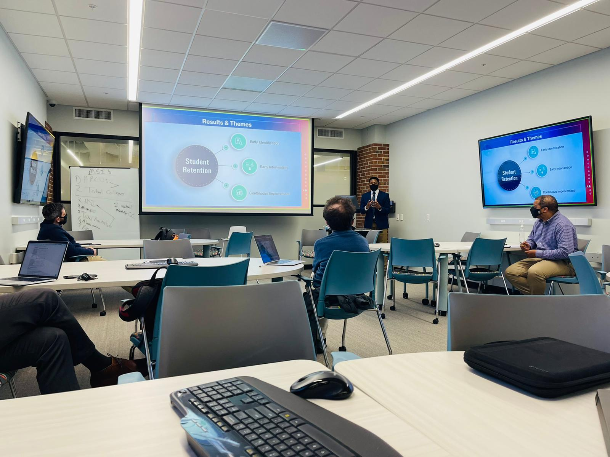
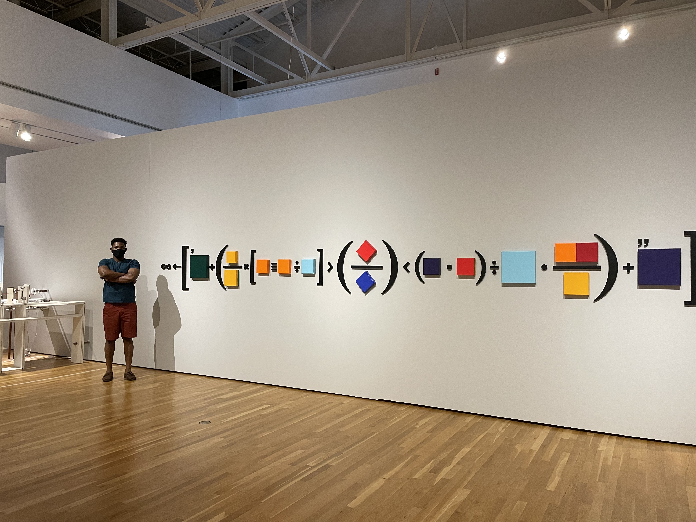

Ray Opoku
Clinical Data Scientist · Learning Analytics Researcher · Educator
PhD in Educational Technology, University of Florida
Akwaaba...
.jpg)
Welcome. Akwaaba means welcome in Akan, a Ghanaian language, and this is where I share my research, teaching and projects.
I am Ray Opoku, a clinical data scientist at the University of Florida College of Medicine and a researcher in the College of Education, where I teach graduate courses in Educational Technology. I completed my PhD in Educational Technology at Florida in 2025 as a Holmes Scholar and the 2022 Gleim Research Fellow.
My research sits where machine learning meets people: fairness in AI, learning analytics and health AI. I study how predictive models behave across student and patient groups, from accuracy-fairness trade-offs in learning analytics to whether clinical early-warning models give every patient the same lead time. I am a member of the AICE Lab (Advanced and Inclusive Computing for Education).
I am originally from Ghana. I hold an MSc in Economics and an MSc in Data Science from South Dakota State University and a BSc in Economics and Statistics from the University of Cape Coast. Outside work I enjoy travel, photography and collaborating with people who care about learning.
I build evidence that AI treats people fairly.
Learning analytics, health AI and the people behind the data.
.jpeg)
Ray O.
Clinical Data Scientist
.jpg)
Ray O.
Learning Analytics

Ray O.
Educator

Ray O.
Fairness in AI
.jpeg)
Ray O.
Health AI
Research
I build and audit machine learning models that make decisions about students and patients. The question behind my work is simple: who does the model serve well and who does it leave behind?
Fairness in AI
Measuring and reducing bias in predictive models, from accuracy-fairness trade-offs to group-level error analysis.
Learning Analytics
Mining learning management system and engagement data to understand how students learn and who is at risk.
Health AI
Clinical prediction models for patient safety, including length-of-stay forecasting and lead-time equity in early-warning systems.
Selected publications
- 2026
- 2025
- 2025
- 2025
- 2024
- 2023
Find my work on
Projects
Coursework, prototypes and tools from my doctoral program. See the full portfolio.
Let's talk
Have a project, a dataset or a question? Pick a channel below and I will get back to you.
Gainesville, FL, USA